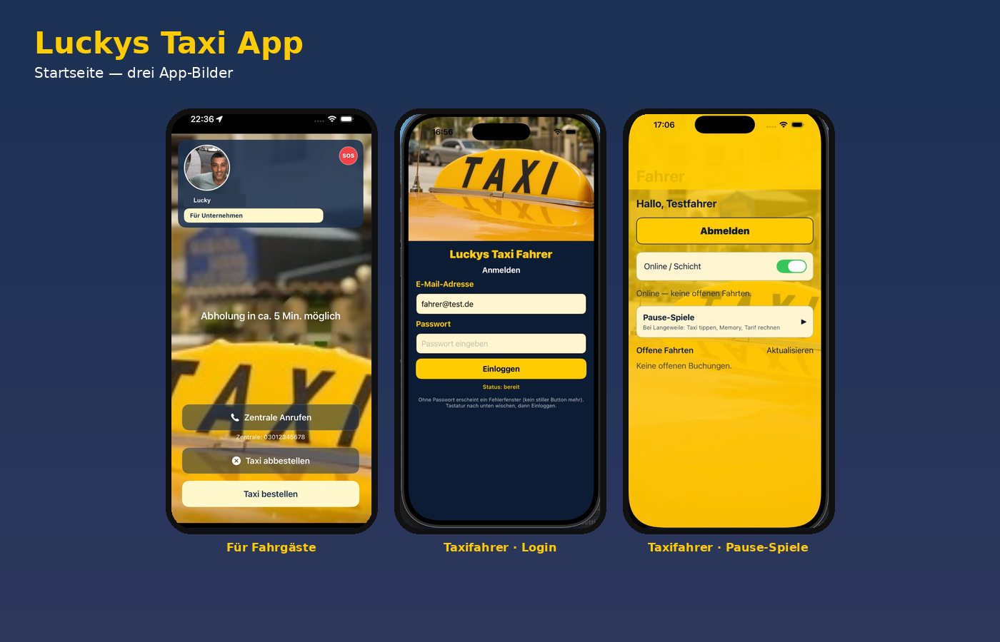

Luckys Taxi App
Fertig & live. Digitale Leitstelle und Online-Buchung für Taxi-Betriebe. Fahrgast-App im App Store. Plattform mieten · Alle Produkte
Online bestellen rund um Dom, Bahnhof, Altstadt — oder als Betrieb Ihre eigene digitale Leitstelle nutzen.

Schon fertig und live — von hier aus erreichbar. Code & Grow (Speyer) bietet Software zum Mieten:
Fertig & live. Digitale Leitstelle und Online-Buchung für Taxi-Betriebe. Fahrgast-App im App Store. Plattform mieten · Alle Produkte
Fertig & live. Onlineshop und App zum Mieten unter dem eigenen Namen. Zur Collection Shop Seite
Demnächst. App für Teams und Betriebe — in Vorbereitung.
Taxi in Speyer online bestellen: Abholadresse am Dom, Hauptbahnhof, in der Altstadt oder am Technik-Museum eintragen — Sofortfahrt oder Termin. Den Fahrpreis zeigt das Taxameter; Zahlung bar beim Fahrer. Auf dem iPhone die Luckys Taxi App, sonst die Web-Buchung unter luckystaxiapp.de/book.html. Firmensitz der Plattform: Speyer (Asternweg 21).
Code & Grow (Firmensitz Speyer, Asternweg 21) vermietet Luckys Taxi App an Betriebe in Speyer und der Metropolregion Rhein-Neckar: Online-Buchung, Browser-Leitstelle und QR unter Ihrem Firmennamen — parallel zur städtischen Zentrale. Ab 9,90 €/Monat pro Fahrzeug, 14 Tage testen.
Online buchen: luckystaxiapp.de/book.html · Betriebe: Partner werden
Auf luckystaxiapp.de/book.html Abholadresse in Speyer und Zeit angeben — oder auf dem iPhone die Luckys Taxi App aus dem App Store. Der Fahrpreis steht auf dem Taxameter — Zahlung bar beim Fahrer, ohne Reservierungsgebühr in der App.
Buchung unter luckystaxiapp.de/book.html mit Abholadresse in Speyer — oder Luckys Taxi App im App Store (iPhone). Sofort oder Termin wählen; Preis nach Taxameter, bar beim Fahrer. Lokale Partner-Betriebe erscheinen unter ihrem Namen, sobald sie angebunden sind.
ab 9,90 €/Monat pro Fahrzeug (2 Autos 18,90 €), monatlich kündbar — inkl. Online-Buchung, Leitstelle und QR-Code. iPhone-App im App Store; Anfrage unter luckystaxiapp.de/onboard.html.